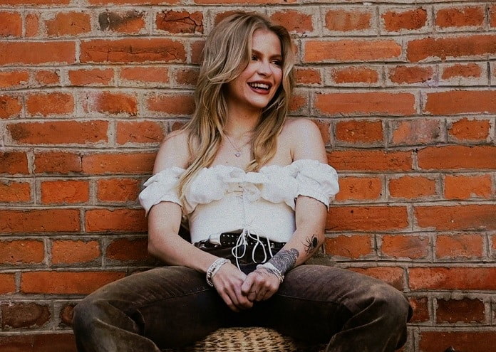
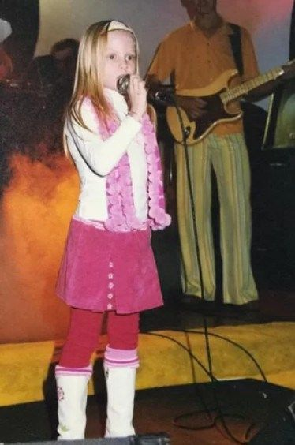
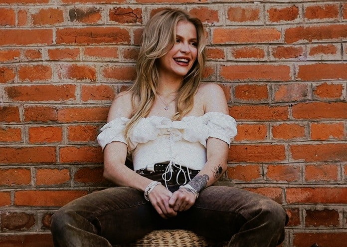
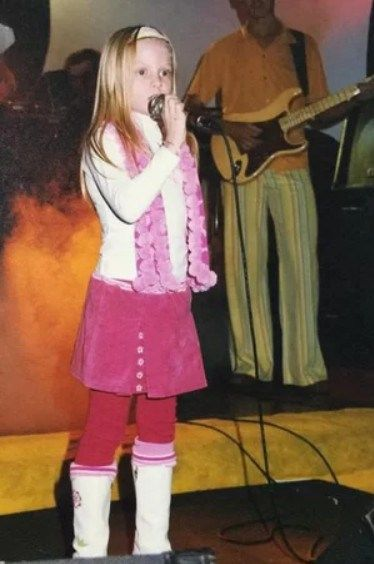

Luiza Sonza
Luísa Gerloff Sonza é uma cantora, compositora, atriz, empresária, influenciadora digital e apresentadora brasileira.Iniciou sua carreira em 2005 ao integrar como vocalista, o que a fez ficar popular sendo reconhecida como a "Rainha dos Covers".Em 2017, deu início à sua carreira solo ao assinar um contrato com a Universal Music Brasil.
 


